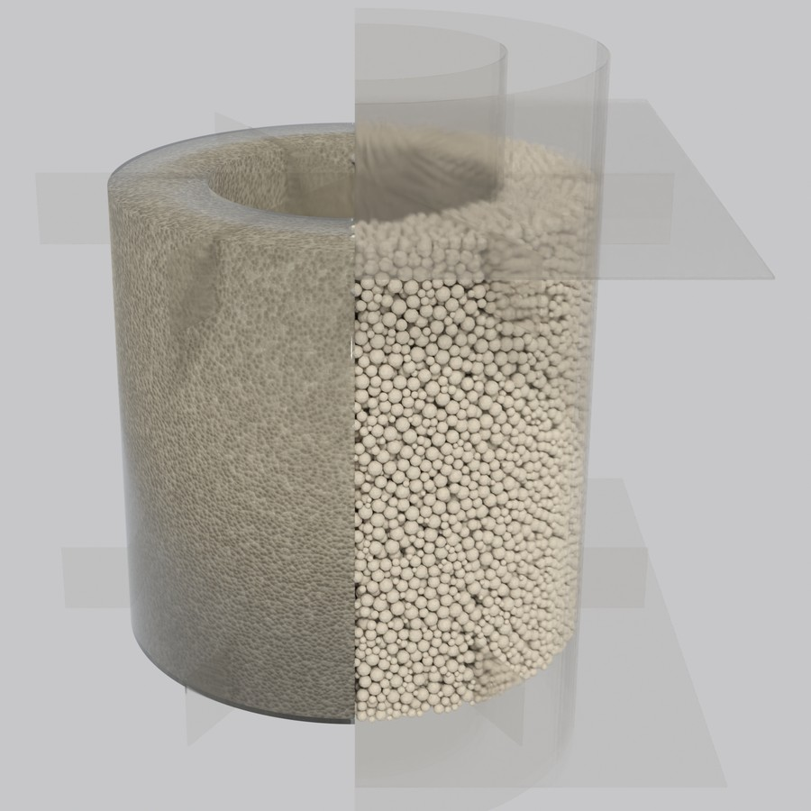
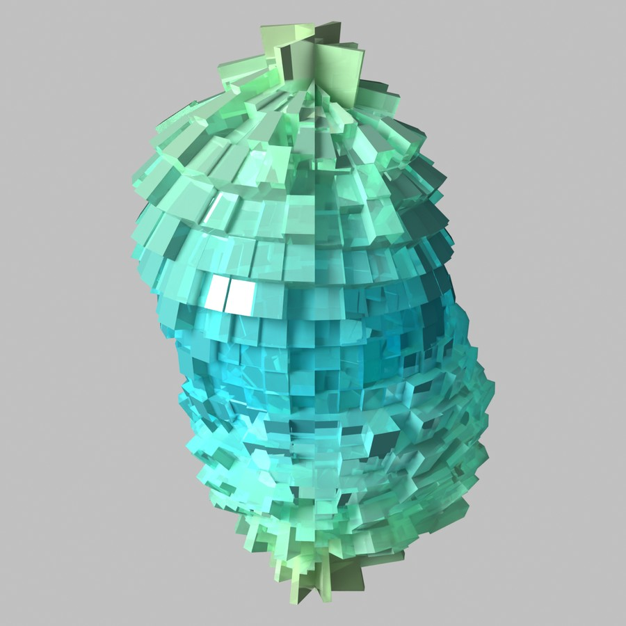

Research
From particle contacts to earthquake response
My research traces a single thread: understanding why soil loses strength during earthquakes, at the scale of individual particle contacts. Along the way, I developed new simulation methods, validated them experimentally, and built AI tools to accelerate the entire workflow.


AI agents for DEM simulation
An ecosystem of open-source tools that bring AI into discrete element simulation. Two MCP servers connect any LLM agent directly to ITASCA PFC and open-source YADE — with BM25-powered doc search, interactive code execution, and live bridges to running simulation instances. Toyoura-nagisa goes further: a full-stack agent platform with multi-agent architecture, multi-provider LLM support, and git-versioned execution for full reproducibility.

Microscopic Fabric Analysis
Investigated fabric evolution in granular soils through true triaxial DEM simulations under general stress conditions, including various stress paths and Lode angles.


DEM-Based HCA Simulation
Developed a coupled analytical servo mechanism that simultaneously satisfies undrained conditions and complex stress states in hollow cylinder apparatus simulations, enabling DEM-based cyclic torsional shear under arbitrary stress conditions. Applied to reveal how initial stress anisotropy governs liquefaction resistance — published in Computers and Geotechnics.


Multi-Directional Seismic Loading
Proposed the double-8 loading path to quantitatively isolate multi-directional shear effects on liquefaction, maintaining equal shear stress magnitudes across different loading patterns.
Expertise
Technical stack
Open Source
Projects

AI agent platform for PFC simulations. Multi-provider LLM, real-time WebSocket bridge to ITASCA PFC, React frontend.

MCP server for PFC workflows. Versioned docs (PFC 6/7/9), interactive code execution, and simulation management via any MCP-compatible client.

MCP server for YADE, the open-source DEM engine. BM25-powered API search and a live bridge to the YADE runtime — run simulations through any MCP-compatible AI agent.